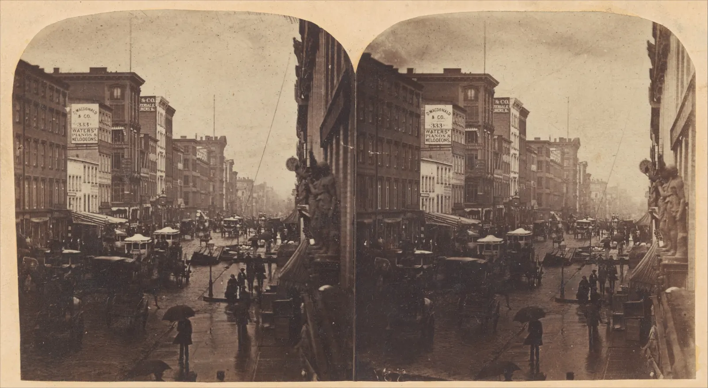

노출
해가 짧은 12월 오후, 전구 몇 개가 켜진 서점 안에서 서가를 찍는다. 첫 장은 책 제목이 흔들려 두 겹으로 보이고, 흔들리지 않게 다시 찍은 둘째 장은 어두운 책등 위에 모래 같은 얼룩이 내려앉았다. 사진을 밝게 만드는 방법은 세 가지뿐이다. 구멍을 넓히거나, 오래 열어 두거나, 받은 신호를 키우거나. 세 방법 모두 대가가 있다. 이 장은 그 세 손잡이를 하나씩 돌려 보고, 셋을 함께 돌려 한 장의 서가 사진을 찍는다.
- 노출이 조리개(f값), 셔터 속도, 감도(ISO)의 세 손잡이로 정해진다는 것을 설명한다.
- f값이 왜 1.4, 2, 2.8, 4처럼 √2배씩 늘어나는지, 스톱(빛 2배)이 세 손잡이를 잇는 공통 단위라는 것을 안다.
- EV와 상호 법칙으로 "같은 밝기, 다른 조합"을 찾는다.
- 각 손잡이의 흔적(조리개는 심도, 셔터는 흔들림, 감도는 노이즈)을 직접 보고 무엇을 내줄지 고른다.
- 노출계가 모든 것을 18% 회색으로 보려 한다는 관습과 그 함정을 안다.
빛의 양을 정하는 세 손잡이
1장에서 노출은 "장면의 어느 부분을 지키고 어느 부분을 버릴지 고르는 일"이라고 했다. 이번에는 그 노출을 실제로 정하는 장치를 본다. 센서 한 칸이 받는 빛의 양, 곧 노출량(Exposure, H)은 장면의 밝기, 렌즈의 구멍 크기, 셔터가 열려 있는 시간으로 정해진다. 여기에 센서가 받은 신호를 얼마나 키울지가 더해져 사진의 밝기가 된다.
센서가 받는 빛의 양은 다음처럼 쓸 수 있다.
장면의 밝기 \(L\)은 사진가가 바꾸기 어렵다(조명을 더하는 방법은 4장). 그래서 노출을 정한다는 것은 \(t\)와 \(N\)을 고르고, 그래도 모자라거나 남으면 감도(ISO sensitivity)로 신호를 키우거나 줄이는 일이다. 감도의 숫자 ISO 100, 200, 400은 국제 표준(ISO 12232)이 정한 방식으로 매긴 것이고, 숫자가 두 배가 되면 같은 밝기의 사진을 얻는 데 필요한 빛이 절반이 된다.
조리개와 f값
렌즈 안에는 얇은 날개 여러 장이 겹쳐 구멍의 크기를 바꾸는 조리개(Aperture)가 있다. 조리개의 크기는 지름 몇 밀리미터가 아니라 f값으로 적는다. 50 mm 렌즈의 구멍 지름이 25 mm라면 f/2, 12.5 mm라면 f/4다. 이렇게 초점거리로 나누어 적으면, 초점거리가 다른 렌즈라도 f값이 같으면 센서에 떨어지는 빛의 밝기가 같다. 긴 렌즈는 구멍이 커야 같은 밝기가 되기 때문이다.
아래 조리개의 눈금 위 손잡이를 끌거나 슬라이더를 움직여 f값을 바꾼다. 굵은 눈금은 빛이 정확히 절반씩 줄어드는 자리다.
f값과 구멍의 넓이
f값의 수열 1, 1.4, 2, 2.8, 4, 5.6, 8, 11, 16, 22는 처음 보면 외우기 어렵지만, 규칙은 하나다. 이웃한 값의 비가 √2(약 1.41)다. 지름이 √2배가 되면 넓이는 2배가 되므로, 이 수열의 한 칸은 빛의 양 두 배, 곧 1스톱이다. 두 칸마다 숫자가 정확히 두 배(2, 4, 8, 16 / 1.4, 2.8, 5.6, 11)가 되는 것도 그래서다. 카메라 대부분은 그 사이를 3분의 1스톱씩 나누어 f/3.2, f/3.5 같은 값도 쓴다.
"조리개를 연다"는 f값을 작게(구멍을 크게), "조리개를 조인다"는 f값을 크게 하는 것이다. 숫자와 구멍의 크기가 반대로 움직여서 처음에는 헷갈리지만, f값이 분수 f/N이라는 것을 기억하면 된다. f/2는 초점거리의 2분의 1, f/16은 16분의 1이다.
스톱과 EV: 세 손잡이의 공통 화폐
셔터 속도와 감도도 같은 단위로 셀 수 있다. 셔터를 1/60초에서 1/30초로 늘리면 빛을 두 배 받으니 1스톱 밝아진다. 감도를 ISO 400에서 800으로 올리면 같은 빛으로 두 배 밝은 사진이 되니 역시 1스톱이다. 그래서 세 손잡이는 모두 스톱(Stop)이라는 하나의 화폐로 바꿀 수 있다. 한 손잡이에서 1스톱을 빼면, 다른 손잡이에서 1스톱을 더해 밝기를 그대로 유지할 수 있다.
노출의 조합을 하나의 숫자로 적는 방법이 EV(Exposure Value, 노출값)다.
같은 EV를 주는 조합끼리는 밝기가 같다는 성질을 상호 법칙(Reciprocity)이라고 한다. 시간과 넓이가 서로를 갚는다는 뜻이다. 아래 그래프에서 장면의 밝기와 감도를 고르면, 같은 밝기를 주는 조합이 한 줄로 늘어선다. 줄 위의 점을 끌어 조합을 바꿔 본다.
같은 노출, 다른 조합
상호 법칙 덕분에 사진가는 밝기를 잃지 않고 조합을 바꿀 수 있다. 하지만 줄 위의 모든 점이 같은 사진을 만드는 것은 아니다. 밝기는 같아도 f/1.4·1/250초의 사진과 f/16·1/2초의 사진은 전혀 다르다. 앞의 사진은 배경이 녹아 흐리고 손님이 멈춰 있으며, 뒤의 사진은 앞뒤가 모두 선명한 대신 손님이 유령처럼 번진다. 다음 세 절에서 이 차이를 하나씩 본다.
셔터 속도: 멈추거나 흐르거나
셔터 속도(Shutter speed)는 센서가 빛을 받는 시간이다. 그 시간 동안 카메라가 흔들리거나 피사체가 움직이면, 같은 점의 빛이 센서 위 여러 칸에 나뉘어 떨어져 번진다. 카메라가 흔들려 생긴 번짐은 사진 전체에 같은 방향으로 생기고, 피사체가 움직여 생긴 번짐은 움직인 것에만 생긴다.
아래 서가 앞으로 손님 한 명이 지나간다. 셔터 속도를 바꾸고, 카메라를 손에 들었는지 삼각대에 올렸는지 고른다. 밝기는 감도를 자동으로 바꿔 같게 유지한다고 가정한다(감도가 남기는 흔적은 다음 절에서 본다).
셔터 속도와 번짐
손에 들고 찍을 때의 한계로 오래 쓰여 온 경험칙이 있다. 셔터 속도를 환산 초점거리 분의 1초보다 빠르게 하라는 것이다. 35 mm 필름 기준 50 mm 렌즈라면 1/50초, 서윤의 미러리스(환산 1.5배)에 50 mm 단렌즈를 끼우면 환산 75 mm이니 1/80초쯤이다. 망원일수록 작은 흔들림도 크게 확대되기 때문에 더 빨라야 한다. 이 경험칙은 필름 시절 작은 인화를 기준으로 생긴 것이라, 화소가 많은 센서로 크게 확대해 보면 그보다 빨라야 한다는 의견도 있다. 반대로 손떨림 보정 장치가 있는 렌즈나 카메라, 휴대폰은 몇 스톱 더 느린 셔터에서도 버틴다. 그러니 기준선으로만 쓰고, 찍은 뒤 확대해 확인한다.

번짐이 언제나 실패는 아니다. 흐르는 물을 비단처럼, 밤길의 자동차 불빛을 선처럼 담는 사진은 일부러 셔터를 오래 연다. 서점 사진이라도, 서가는 선명하고 지나가는 손님만 살짝 번진 사진은 "붐비는 서점"이라는 이야기를 전할 수 있다. 무엇을 멈추고 무엇을 흐르게 할지가 사진이 전하려는 것에 맞는지가 기준이다.
감도: 빛을 늘리지 않고 키운다
감도를 올리면 사진이 밝아진다. 그런데 감도는 센서에 들어오는 빛을 늘리지 않는다. 같은 빛을 받은 뒤 그 신호를 크게 키울 뿐이다. 문제는 신호 속에 섞여 있는 불규칙한 흔들림, 곧 노이즈(Noise)도 함께 커진다는 점이다. 빛이 적을수록 신호에 비해 노이즈의 몫이 커지고, 그것을 키우면 어두운 부분에 모래 같은 얼룩과 색 반점이 드러난다.
아래는 서가 일부를 확대한 것이다. 왼쪽은 삼각대에서 ISO 100으로 오래 찍은 사진, 오른쪽은 고른 감도로 그만큼 짧게 찍은 사진이다. 두 사진의 밝기는 같다. 경계선을 끌어 비교하고 감도를 올려 본다.
같은 밝기, 다른 감도
그러니 감도는 "빛이 모자랄 때 마지막에 돌리는 손잡이"로 생각하는 편이 좋다. 조리개를 더 열 수 없고 셔터를 더 늦출 수 없을 때, 흔들린 사진보다는 거친 사진이 낫다는 판단으로 감도를 올린다. 거꾸로 삼각대를 쓸 수 있고 피사체가 움직이지 않는다면, 감도를 낮추고 셔터를 늦추는 것이 언제나 깨끗하다. 도록에 실을 작품처럼 움직이지 않는 대상을 찍을 때 사진가들이 가장 낮은 감도를 고집하는 이유다.
조리개의 흔적: 심도
조리개도 흔적을 남긴다. 1장의 바늘구멍과 렌즈를 떠올리면, 렌즈는 한 거리에만 정확히 초점을 맞춘다. 그보다 가깝거나 먼 점은 작은 원으로 퍼져 맺힌다. 구멍이 클수록 이 원도 커진다. 그래서 조리개를 열면 초점 맞은 곳 앞뒤가 빨리 흐려지고, 조이면 앞뒤로 넓은 범위가 선명해 보인다. 선명해 보이는 앞뒤 범위를 피사계 심도(Depth of field), 줄여서 심도라고 한다.
아래 장면에는 거리가 다른 세 가지가 있다. 1.3 m 앞의 탁자와 책 더미, 2.2 m 앞의 손님, 3 m 앞의 서가. 장면을 눌러 초점을 맞출 곳을 고르고, f값을 바꾼다.
조리개를 열면 앞뒤가 녹는다
심도는 조리개만으로 정해지지 않는다. 초점 거리가 멀수록, 렌즈가 짧을수록 깊어진다. 휴대폰 사진이 거의 모든 곳에서 선명한 것은 휴대폰 렌즈의 초점거리가 아주 짧기 때문이다(5장, 7장). 이 장에서 기억할 것은 하나다. 조리개를 열어 빛을 얻으면, 그 대가로 심도를 내준다.
노출계와 18% 회색
카메라는 알맞은 노출을 어떻게 아는가. 카메라 안의 노출계(Light meter)는 렌즈로 들어온 빛의 평균을 재고, 그 평균이 중간 회색으로 찍히도록 노출을 정한다. 중간 회색은 흔히 빛의 18%를 반사하는 회색으로 설명한다. 18% 반사율은 명도로 따지면 L* 약 50으로, 흰색과 검정 사이 "보기에 중간"인 밝기다(이 책의 엔진으로 계산하면 49.5). 대부분의 장면은 밝은 것과 어두운 것이 섞여 평균이 중간쯤이 되므로, 이 방법은 대체로 잘 맞는다.
잘 맞지 않는 장면도 있다. 아래에 흰 수채화 종이, 회색 카드, 검은 스케치북 표지가 같은 빛 아래 나란히 있다. 측광 표시를 끌어 셋 중 하나를 재고, 측광 방식을 바꿔 본다.
노출계는 모든 것을 회색으로 본다
흰 눈밭을 찍으면 회색 눈이, 검은 고양이를 찍으면 회색 고양이가 나오는 것이 이 때문이다. 노출계는 무엇이 원래 밝은지 모른다. 그래서 사진가는 장면의 평균이 중간 회색에서 얼마나 벗어나는지 판단해 노출 보정을 한다. 흰 것이 화면을 채우면 +1~+2스톱, 검은 것이 채우면 −1~−2스톱이 흔한 출발점이다. 또는 대상 대신 회색 카드를 재거나, 피사체에 떨어지는 빛 자체를 재는 입사광식 노출계(Incident meter)를 쓴다. 18%라는 숫자는 자연의 법칙이 아니라 사진계가 오래 써 온 관습이라는 점도 기억해 둔다.
세 손잡이를 함께 돌리기
이제 세 손잡이를 한꺼번에 돌려 서가 사진 한 장을 찍는다. 장면은 12월 오후 전구 조명 아래의 서가로, 밝기는 EV100 6이다. 노출이 알맞은지, 흔들리지 않았는지, 노이즈가 얼마나 되는지, 앞의 탁자가 얼마나 흐린지를 함께 본다. 장면을 눌러 초점을 바꿀 수 있다.
서가 사진 노출 실험실
세 손잡이에는 정답 조합이 없다. 대신 "무엇을 내줄 수 있는가"를 묻는 순서는 있다. 움직이는 것이 있으면 셔터 속도부터 정한다. 앞뒤로 선명해야 할 범위가 있으면 조리개를 정한다. 그러고도 빛이 모자라면 마지막으로 감도를 올린다. 거꾸로 삼각대가 있고 아무것도 움직이지 않는다면 감도를 가장 낮게 두고 셔터를 늦춘다. 같은 장면도 무엇을 전하려는지에 따라 이 순서의 답이 달라진다.
서윤의 겨울 촬영 노트
흔들리거나, 거칠거나, 둘 다 아니거나
창가 사진은 일단 미뤄 두고, 서윤은 빛이 비교적 고른 서가부터 찍기로 했다. 웹사이트에 올릴 서가 사진 두 장이다. 12월 둘째 주 오후 네 시, 창밖은 이미 어두워지기 시작했고 서가는 천장의 전구로만 밝았다. 이번에는 도경의 미러리스를 들었다.
첫 장은 카메라가 정한 대로 찍었다. 카메라는 조리개 f/2.8, 감도 ISO 100에 맞춰져 있었고, 노출계가 고른 셔터 속도는 1/4초였다. 손에 든 채 찍은 사진은 책 제목이 두 겹으로 흔들렸다. 둘째 장은 흔들리지 않게 셔터를 1/60초로 빠르게 하고 감도를 ISO 1600으로 올렸다. 셔터에서 4스톱(1/4 → 1/8 → 1/15 → 1/30 → 1/60)을 빼서 감도에 더한 셈이다. 흔들림은 줄었지만, 화면에서 확대하자 어두운 책등과 선반 그림자에 색 얼룩이 앉아 있었다. 두 장은 노출이 같다. 그리고 두 장 다 어두운 책등이 조금 회색빛으로 들떠 보였다.
도경은 가방에서 손바닥만 한 낡은 노출계를 꺼냈다. 필름 시절에 쓰던 입사광식 노출계였다. 서가 앞에 서서 하얀 반구를 카메라 쪽으로 향하고 단추를 누르자 바늘이 "ISO 100에서 EV 6" 자리에 멈췄다. 카메라가 고른 f/2.8·1/4초는 EV 약 5이니 1스톱 밝게 찍은 것이다. "책등이 대부분 어두우니 카메라 노출계는 그걸 중간 회색으로 만들려고 밝게 찍은 거야. 이건 서가에 떨어지는 빛을 재는 거라 책 색에 속지 않아." 그리고 덧붙였다. "서가는 움직이지 않잖아. 움직이지 않는 걸 찍는데 왜 빛을 키워. 오래 받아 적으면 되지."
서윤의 선택은 삼각대였다. 서가는 움직이지 않고, 문제는 손과 손님뿐이다. 손은 삼각대와 셀프타이머로 막고, 손님은 손님이 없는 개점 전에 찍어서 피한다. 감도는 가장 낮게 두어 노이즈를 피하고, 서가를 비스듬히 찍더라도 앞뒤 칸이 함께 선명하도록 조리개는 f/8로 조인다. EV 6에서 ISO 100, f/8이면 셔터는 \(t = N^2/2^{\mathrm{EV}} = 64/64\), 정확히 1초다. 다만 SNS에 올릴 손님 있는 서가 장면처럼 삼각대를 세울 수 없을 때를 위해 손에 들고 쓸 조합도 하나 적어 두었다.
핵심 정리
- 센서가 받는 빛의 양은 장면의 밝기 × 셔터 시간 ÷ f값의 제곱에 비례한다. 감도는 빛을 늘리지 않고, 받은 신호를 키운다.
- f값은 초점거리 ÷ 구멍 지름이다. 수열 1.4, 2, 2.8, 4, 5.6, 8, 11, 16의 한 칸은 √2배이고, 빛의 양으로 2배, 곧 1스톱이다.
- 스톱은 세 손잡이의 공통 화폐다. EV = log₂(N²/t)가 같은 조합은 같은 양의 빛을 받는다(상호 법칙).
- 셔터 속도의 흔적은 번짐이다. 삼각대는 카메라 흔들림만 막고, 움직이는 피사체의 번짐은 셔터 속도로만 막는다. 손 촬영은 "환산 초점거리 분의 1초"가 경험칙이다.
- 감도의 흔적은 노이즈다. 빛이 광자 알갱이로 오기 때문에 받은 빛이 적을수록 신호 대 노이즈가 나빠진다(√n). 노이즈를 줄이는 가장 확실한 방법은 빛을 더 받는 것이다.
- 조리개의 흔적은 심도다. 열수록 초점 앞뒤가 흐려진다.
- 노출계는 잰 곳을 중간 회색(18% 관습)으로 만들려 한다. 흰 것과 검은 것이 많은 장면은 노출 보정을 하거나, 회색 카드나 입사광을 잰다.
확인 퀴즈
1. f/4, 1/125초, ISO 400으로 알맞게 찍히는 장면이 있다. 조리개를 f/8로 조이면서 밝기를 유지하려면 셔터 속도를 어떻게 해야 하는가(감도는 그대로)?
2. 어두운 실내에서 손님이 걸어 다니는 장면을 손에 들고 찍는다. 사진이 흔들렸고 손님도 번졌다. 삼각대를 쓰면 어떻게 되는가?
3. ISO 100에서 ISO 1600으로 감도를 올리고 셔터를 그만큼 빠르게 해 같은 밝기의 사진을 얻었다. 어두운 부분에 노이즈가 늘어난 가장 근본적인 이유는?
4. 눈 덮인 마당을 자동 노출로 찍었더니 눈이 회색으로 칙칙하게 나왔다. 가장 알맞은 설명과 대처는?